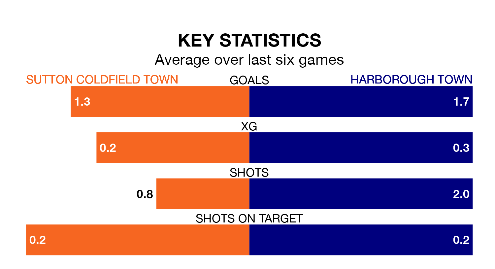

Sutton Coldfield Town welcome Harborough Town to the Central Ground on Saturday looking to pick up points to end their three-game losing streak.
Sutton Coldfield's struggles have left them with nine points from their last six Northern Premier League Division One – Midlands matches, while their opponents have earned 11 from a possible 18.
With 72 goals in 34 games so far this season, Harborough are the league's third-highest scorers with 2.1 goals per game. And they are conceding fewer than average, letting in 23 goals at a rate of 0.7 per game.
Sutton Coldfield, meanwhile, are below average scorers, with 1.5 goals per game, compared to a league average of 1.6. They have conceded 1.6 goals per game.
Harborough Town are second in the table after 34 games, of which they have won 24 and drawn five, earning 77 points.
Sutton Coldfield Town are 10 places behind the away team in 12th, with 14 wins and six draws putting them on 48 points.
In the last three years, Sutton Coldfield and Harborough have played each other on three occasions. Sutton Coldfield won one of them and Harborough the other.
Their last meeting was on November 25, when Sutton Coldfield won 3-2 away.
Sutton Coldfield's last match was on April 13, a 4-0 loss against Spalding United.
Harborough beat Quorn 5-0 last time out, also on April 13.
Updated: 15:40 (UTC), 18/04/24